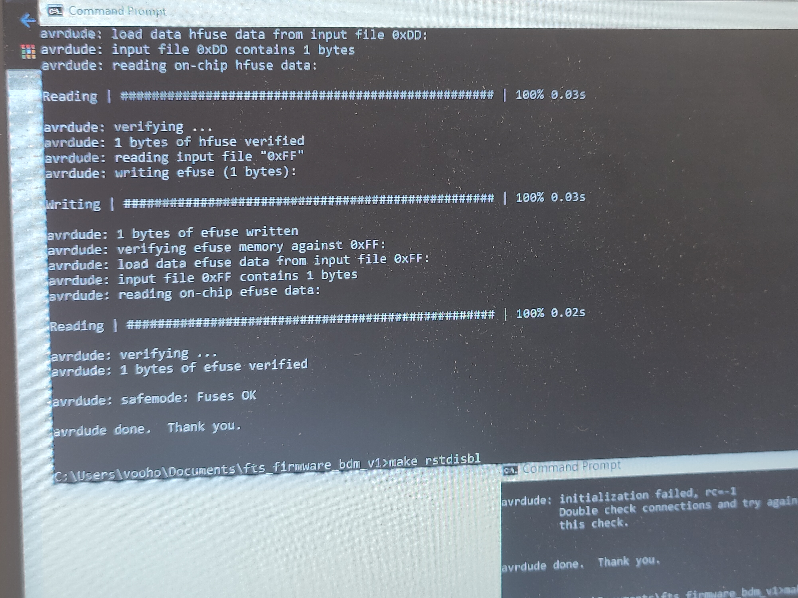

In EMbedded Programming, we shall learn how to programme the AT Tiny 85 board that we have made in the previous sections. Since the AT Tiny85 board that we have made is special, we cannot programme it on its own like arduino. As you can see, the baord that we have made has no usb connector, which means it cannot be directly plugged into our laptop/pc for programming. SO, we need an additional component to programme the board, a programmer.
There are multiple types of programmers out there, but the ones that we have acess to are the AT Tiny ISP and the numerous types of Arduino Board.
For Further Digital Fabrication, we are required to create our own AT Tiny ISP board to programme our AT Tiny85 board. So with the information that we gathered up till now, I created a ATTiny ISP board with the given traces.

So now that we have the programmer board, we still cannot start programming yet, this si because although we have soldered on everything, the board does not know what to do and we must first upload commands onto the board so that it will programme the T85 when instructed to.
To do that, first we have to download some softwares. To understand the complexity of this step, please refer to this --> How to use GNU AVR toolchain on windows
The link to download Atmel AVR toolchain appears to be bugged, so here is where I've gotten mine from, courtesy of Zhan Li. If you have done everything correctly, this is what you should see in your Path.
Next, you will have to make sure your computer recognises your ISP board, to do this, we require a software known as Zadig. Plug in your ISP board and open up zadig,select ISP programmer and download the "libub-win32" driver.

After doing all of these, we can finally start programming the programmer.Plug in your ISP Board. Firstly, open up Command Prompt and type "cd Documents" followed by "cd fts_firmware_bdm_v1".
Next type "make". Followed by "make flash". You should see you ISP board blinking.
Next, type "make fuses".
Lastly, type"make rstdisbl". This will make your ISP board available for programming.
Now that we've done preping the programmer board, lets prep the board that we're going to programme. The programming of the T85 board can be done through arduino so no additional software is required. Before programming , lets understand the pin layout of the T85 board.
Since we are programming on Arduino, we shall look at the Arduino pin to determine the pin number for when we are programming.
Before we start, we still have to import a library into Arduino in order for it to recognise our board. As recommended, we will be using SpenceKonde's version .( Link to his github--> here) To import his library into your Arduino, open up Arduino>Files>Preferences>Additional Boards Manager URLs. Enter this URL(http://drazzy.com/package_drazzy.com_index.json) inside and click the button to the side.
Next, go to Tools>Boards>Boards Manager and search in the search bar"ATTiny Core by Spence Konde" and install.

Next, plug in your ISP programmer board connected to your T85 board through a jumper cable and change the settings to as follows. Burn Bootloader. Now we can finally start programming!
To test the functionality and to celebrate a little, lets test the basic blink programm on the board. Load in the Arduino example programms and load in the Blink programme.Based on our schematic diagram, our in built LED is located on Arduino Pin 4. SO we need to change the output pin to pin 4. But when we upload our code, we cannot use the normal means of uploading . We must go to Tools>Upload Using Programmer. Lets witness the fruits of our labour.